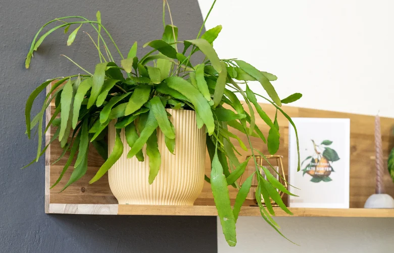

🌿 Conhecendo as samambaias!
As samambaias são plantas antigas e muito charmosas. Elas existem na Terra há milhões de anos e não produzem flores nem sementes.

🌿 O que a samambaia gosta?
Antes de conhecer melhor essas plantas, descubra duas coisas importantes para cuidar delas:
Água e umidade
Muitas samambaias gostam de solo úmido e de ambientes com ar mais úmido. Evite deixar a terra secar por muito tempo.
Luz
A maioria prefere luz clara e indireta. O sol forte direto pode ressecar as folhas.
Importante: gostar de umidade não é o mesmo que viver na água! O solo pode ficar úmido, mas o vaso precisa de furos para o excesso escoar.
🌿 O que torna uma samambaia especial?
As samambaias fazem parte de um grupo de plantas muito antigo. Elas costumam viver em lugares úmidos e sombreados, como matas e beiras de rios.
Folhas em forma de pena
As folhas das samambaias são chamadas de frondes e costumam ser recortadas, lembrando penas.
Sem flores
Elas não produzem flores nem sementes, e se reproduzem de outro jeito, por esporos.
Amam umidade
Muitas vivem em lugares úmidos e sombreados. Em casa, o ar seco pode incomodá-las.
🔎 Detetive das samambaias!
Toque nos tópicos para descobrir mais sobre essas plantas.
🪶 O que são frondes?
É o nome das folhas das samambaias. Elas costumam ser divididas em pedacinhos, como uma pena.
🟤 O que são as pintinhas atrás das folhas?
Em muitas samambaias, as bolinhas marrons embaixo das folhas guardam os esporos, que ajudam a planta a se reproduzir. Elas não são doença nem insetos.
🌱 Como elas se reproduzem?
Em vez de sementes, as samambaias liberam esporos, que são minúsculos e podem dar origem a novas plantas.
🍂 Por que as pontas secam?
Podem secar por ar muito seco, pouca água ou sol forte demais. Observe o ambiente para descobrir o motivo.
🪴 Como cuidar de uma samambaia?
Samambaias gostam de atenção constante, principalmente com a umidade.
Luz clara e indireta
Evite o sol forte direto nas folhas, pois elas podem ressecar.
Mantenha o solo úmido
Regue com frequência para a terra não secar por completo, sem deixar a água parada no vaso.
Cuide do ar
Em ambientes muito secos, algumas samambaias sofrem. Lugares mais úmidos costumam ser bons para elas.
Retire folhas secas
Retire as frondes secas com a ajuda de um adulto. Isso deixa a planta mais bonita.
🧠 E agora, pequeno jardineiro?
Imagine que você tem uma samambaia pendurada perto de uma janela onde bate sol forte. As pontas das folhas estão secas e a terra também. O que fazer?
Qual cuidado vale a atenção?
Descobrir a resposta
💡 O sol forte e a terra seca podem estar ressecando a planta. Mover a samambaia para um lugar com luz mais suave e regar quando a terra estiver secando pode ajudar.
Observe a planta nos próximos dias para ver como ela reage.
💡 Você sabia?
As samambaias existem há centenas de milhões de anos, muito antes dos dinossauros! Elas são parte de um grupo de plantas muito antigo.
E o Meu PlantAmigo?
O Meu PlantAmigo acompanha a umidade do solo. Isso ajuda muito com samambaias, que costumam gostar de terra úmida. Com a informação, você percebe quando o solo está secando e evita esquecer a rega.
🌿 Você virou especialista em samambaias!
Agora que você descobriu os segredos dessas plantas, teste seus conhecimentos no quiz.
Fazer o quiz